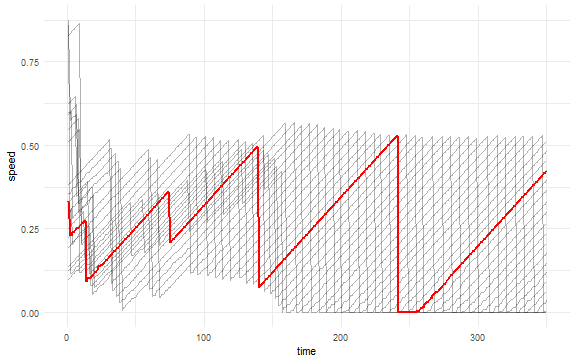

Traffic
The agents_after element (see Segregation example) provides the individual agents’ variables but only at the end of simulation. With agents_step it is possible to measure all agents individually per each time step.
Example below shows how to read the position of each car on every time step from Netlogo Traffic Basic model (Wilensky, 1997).
experiment <- nl_experiment(
model_file = "models/Sample Models/Social Science/Traffic Basic.nlogo",
iterations = 350,
param_values = list(
acceleration = 0.0045,
deceleration = 0.026
),
agents_step = list(
cars = agent_set(
vars = c("who", "xcor", "speed"),
agents = "turtles")
),
random_seed = 1
)result <- nl_run(experiment)The data about individual agents are now stored in result$agents_step$cars. To join the data with the values from parameter sets use nl_get_result function.
dat <- nl_get_result(result, type = "agents_step", sub_type = "cars")library(ggplot2)
ggplot(dat, aes(x = step_id, y = xcor - speed, dx = 1, dy = speed)) +
geom_segment(aes(xend = step_id + 1, yend = xcor )) +
geom_segment(aes(xend = step_id + 1, yend = xcor ),
dat[dat$who == 0,], color = "red", size = 1.1) +
labs(x = "time", y = "position") +
theme_minimal()

library(ggplot2)
ggplot(dat, aes(x = step_id, y = speed, z = factor(who))) +
geom_line(alpha = 0.3) +
geom_line(data = dat[dat$who == 0,], color = "red", size = 1) +
labs(x = "time", y = "speed") +
theme_minimal() 
See also
Segregation example demonstrates how to obtain data from individual NetLogo agents.
Network example demonstrates how to read a network structure from NetLogo turtles and links.
DLA example demonstrates how to read patches and their variables.
Ants example demonstrates simple parameter sets definition and parameter mapping.